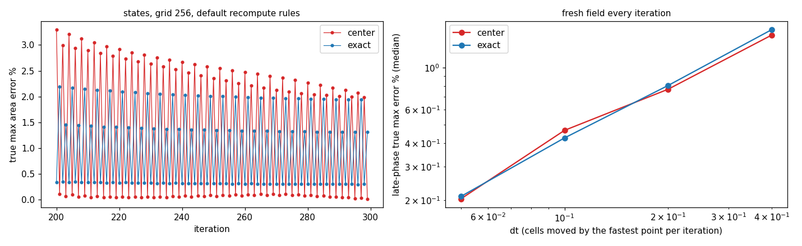
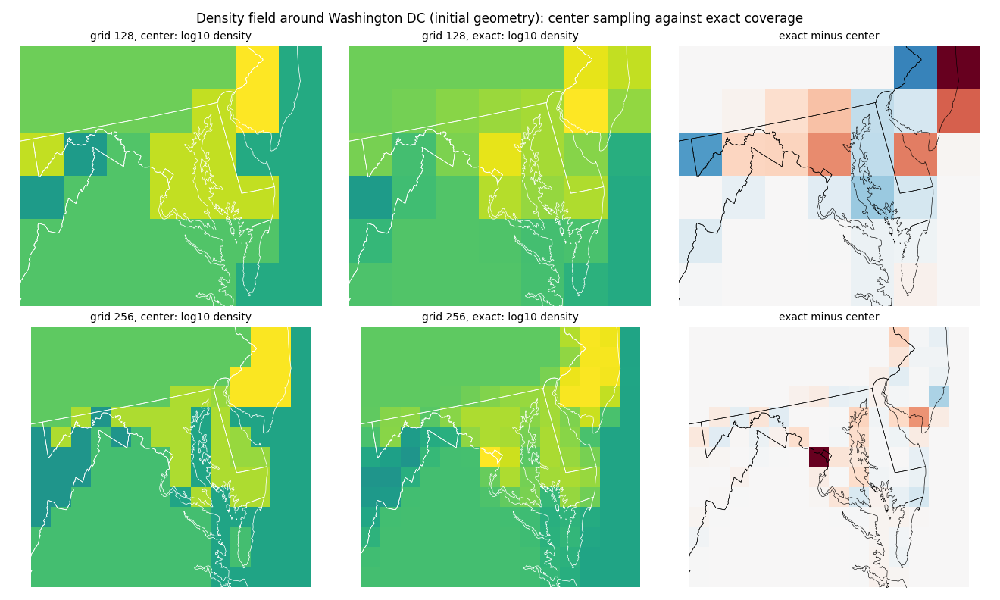
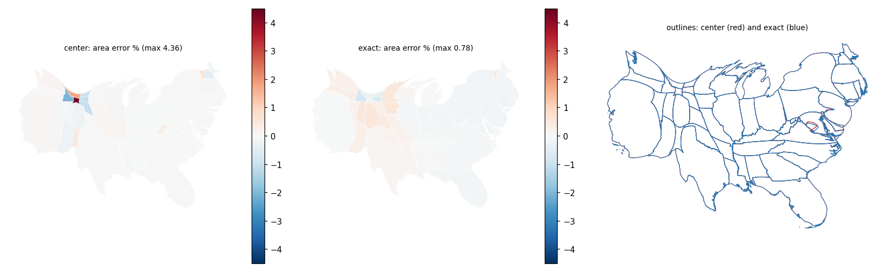
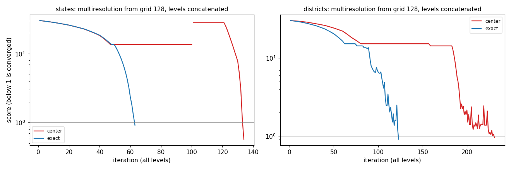
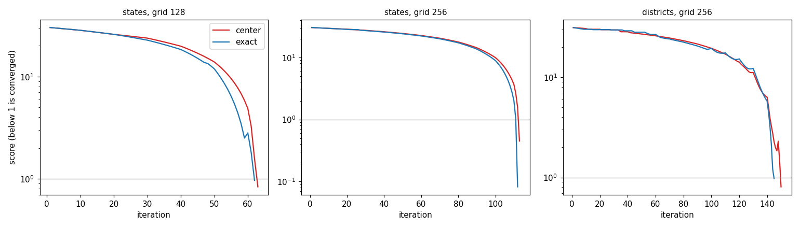

Each grid cell takes the area it covers of each region instead of the region at its center, and this is now the default. Regions smaller than a cell take part, the coarse multiresolution level no longer plateaus, rasterization is faster or equal from grid 256 up, and accuracy at the stopping point is comparable; the late phase of both rasterizations is the same limit cycle, set by the step size.
The first commit adds density_rasterization="exact"; the second makes it the default ("center" restores the previous behavior). The comparisons below set the mode explicitly. The prototype and its first measurements are on exploration-area-coverage; this page measures the code of the PR. make_figures.py regenerates every figure and data/tables.md. Counties are not bundled and are not run here; the exploration page found them unchanged.
| input | rasterization | level | grid | status | iterations |
|---|---|---|---|---|---|
| states | center | 1 | 128 | stalled | 100 |
| states | center | 2 | 256 | converged | 34 |
| states | center | total | - | converged | 134 (true max error 5.63 %) |
| states | exact | 1 | 128 | converged | 63 |
| states | exact | total | - | converged | 63 (true max error 9.15 %) |
| districts | center | 1 | 128 | converged | 231 |
| districts | center | total | - | converged | 231 (true max error 8.72 %) |
| districts | exact | 1 | 128 | converged | 123 |
| districts | exact | total | - | converged | 123 (true max error 8.31 %) |
| input | grid | rasterization | status | iterations | reported max error % | true max error % | true mean error % | seconds |
|---|---|---|---|---|---|---|---|---|
| states | 128 | center | converged | 63 | 8.30 | 7.75 | 1.193 | 0.3 |
| states | 128 | exact | converged | 62 | 9.66 | 8.87 | 1.297 | 0.2 |
| states | 256 | center | converged | 113 | 4.38 | 4.36 | 0.313 | 0.6 |
| states | 256 | exact | converged | 112 | 0.79 | 0.78 | 0.203 | 0.2 |
| districts | 256 | center | converged | 150 | 8.00 | 8.05 | 1.065 | 0.7 |
| districts | 256 | exact | converged | 145 | 9.76 | 9.76 | 1.415 | 0.5 |
Different tolerances (the stopping point moves, and so do the errors at it):
| input | grid | tolerances | center: status, iterations, true max, true mean | exact: status, iterations, true max, true mean |
|---|---|---|---|---|
| states | 256 | 0.02 / 0.04 | converged, 115, 0.62, 0.071 | converged, 112, 0.78, 0.203 |
| states | 256 | 0.01 / 0.02 | converged, 115, 0.62, 0.071 | converged, 112, 0.78, 0.203 |
| states | 256 | 0.005 / 0.01 | converged, 115, 0.62, 0.071 | converged, 112, 0.78, 0.203 |
| states | 256 | 0.002 / 0.004 | converged, 161, 0.37, 0.073 | converged, 148, 0.39, 0.129 |
| states | 512 | 0.02 / 0.04 | converged, 215, 1.43, 0.186 | converged, 215, 3.32, 0.237 |
| states | 512 | 0.01 / 0.02 | converged, 215, 1.43, 0.186 | converged, 219, 0.68, 0.113 |
| states | 512 | 0.005 / 0.01 | converged, 217, 0.53, 0.067 | converged, 219, 0.68, 0.113 |
| states | 512 | 0.002 / 0.004 | converged, 219, 0.30, 0.054 | converged, 243, 0.38, 0.099 |
| districts | 256 | 0.02 / 0.04 | converged, 153, 3.64, 0.355 | converged, 151, 3.76, 0.571 |
| districts | 256 | 0.01 / 0.02 | converged, 155, 1.88, 0.252 | converged, 154, 1.50, 0.173 |
| districts | 256 | 0.005 / 0.01 | converged, 163, 0.90, 0.165 | converged, 156, 0.73, 0.132 |
| districts | 256 | 0.002 / 0.004 | converged, 235, 0.39, 0.074 | stalled, 220, 0.49, 0.109 |
At matching tolerances the iteration counts are within 10 %, with one exception: the districts at 0.2 %/0.4 % stall at 220 iterations for exact coverage (true maximum error 0.49 %) where center converges at 235. The true errors at the stopping point are mixed: lower for exact on the states at grid 256 with default tolerances, the states at 512 at 1 % and the districts at 1 %, higher on the mean for the states at 256.
An earlier version of this page, and of the PR description, said that center sampling keeps improving far past convergence while exact coverage plateaus, because the center field becomes exactly uniform. That was wrong. It came from sampling every tenth iteration, which for these runs falls on opposite phases of a 2-cycle for the two modes. With every iteration recorded the two behave alike.
Late phase of the states at grid 256 (300 iterations, tolerances unreachable, stall rule off, every iteration recorded). True maximum area error over the last 50 iterations:
| rasterization | lowest % | median % | highest % |
|---|---|---|---|
| center | 0.020 | 1.049 | 2.547 |
| exact | 0.303 | 0.815 | 2.003 |
| dt | center: lowest / median / highest % | exact: lowest / median / highest % |
|---|---|---|
| 0.4 | 1.445 / 1.482 / 1.538 | 1.102 / 1.583 / 2.248 |
| 0.2 | 0.580 / 0.769 / 0.904 | 0.724 / 0.804 / 0.912 |
| 0.1 | 0.082 / 0.467 / 1.120 | 0.193 / 0.426 / 0.685 |
| 0.05 | 0.175 / 0.204 / 0.246 | 0.206 / 0.210 / 0.213 |
What happens, and why the field does not become uniform:
dt grid cells per iteration (dt_prime = dt * min(dx, dy) / max_v in algorithm.py; the relative strength of the field cancels). Near the target, that step is larger than the correction the field asks for, so each iteration overshoots and the errors alternate in sign around zero (Colorado: +2.1, +0.05, -2.0, +0.03, +2.1 %, with the default recompute rules; +0.5, -0.8 % with a fresh field at every iteration). The amplitude is set by dt and the geometry of the regions, not by the rasterizer, which is why the right panel shows no difference between center and exact.So no limitation specific to exact coverage remains in these measurements. Whatever tolerance sits below the cycle amplitude (about 0.5 to 2 % for these inputs at dt 0.2) is reached by chance at the moment the cycle dips below it, for both rasterizations; this is also why the districts at 0.2 %/0.4 % stall for exact and converge for center in the table above.
Minimum of three calls, in milliseconds:
| input | grid | center ms | exact ms |
|---|---|---|---|
| states | 128 | 2.0 | 2.4 |
| states | 256 | 3.0 | 2.4 |
| states | 512 | 7.1 | 4.5 |
| states | 1024 | 23.0 | 12.8 |
| districts | 128 | 14.9 | 11.4 |
| districts | 256 | 18.7 | 8.3 |
| districts | 512 | 23.2 | 10.6 |
| districts | 1024 | 40.9 | 19.8 |
premorph runs this morph and is unaffected within noise (premorph with the balanced preset, 400 iterations, RasterBackend(resolution=256), anchor 0.25):| input | rasterization | morph iterations | Voronoi iterations | mean area error % | adjacency kept | compactness | Texas inside its morphed region |
|---|---|---|---|---|---|---|---|
| states | center | 113 | 43 | 0.081 | 0.789 | 0.570 | 0.88 |
| states | exact | 112 | 43 | 0.085 | 0.780 | 0.566 | 0.88 |
| districts | center | 150 | 9 | 0.000 | 0.600 | 0.718 | - |
| districts | exact | 145 | 9 | 0.007 | 0.601 | 0.718 | - |
test_flow_stall_detection.py tune a diverging step or a small margin on center sampling and pin "center" explicitly; the pinned iteration counts of the default run move from 113 to 112.The counties plateau (targets far below one cell), the sawtooth, and the border drift of #86 are unaffected; see the exploration page.

Left: the true maximum area error at every iteration of the states at grid 256 with unreachable tolerances. Both rasterizations alternate between a low and a high value with the same envelope, around 2 %. Right: with a fresh field at every iteration, the late-phase error is proportional to dt (0.2 % at dt 0.05, 1.5 % at dt 0.4) and the same for both.

The initial density field around Washington DC at grids 128 and 256. DC covers 0.04 cells at grid 128 and 0.15 at 256 and contains no cell center at either, so center sampling does not see it; exact coverage puts its density (the bright cell at 256) where it is. The right column is exact minus center.

States at grid 256: area error per region (left, center; middle, exact) and the two outlines (right). The maps are nearly identical; the largest center error is Wyoming.

Score of a multiresolution morph from grid 128 (3 levels, 300 iterations per level, stall rule on), levels concatenated. Center sampling plateaus at 13.6 on the coarse level until the stall rule fires; exact coverage converges at once.

Score against iteration at the default tolerances: the same path with a steeper end for exact coverage.